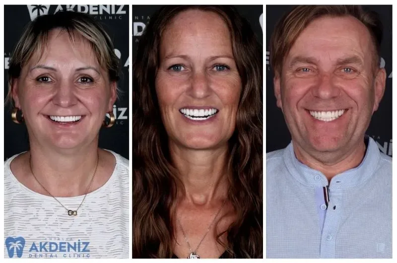

Tak. Zęby All on 4 w Antalyi wyglądają naturalnie – nie są przesadnie białe ani zbyt duże w stosunku do Twojej twarzy. Efekt zależy od projektu mostu: widocznych zębów, ich ustawienia i ewentualnego materiału w kolorze dziąseł wokół nich.
Co sprawia, że zęby All on 4 wyglądają naturalnie?
Wielkość i kształt zębów: właściwe proporcje
Górne zęby przednie nie są jednakowe. Dwa środkowe zęby są zwykle szersze od mniejszych zębów obok nich, a kły mają jeszcze inny zarys. Przekonujący most zachowuje te różnice.
Liczy się też długość.
Planując zęby przednie, sprawdzamy, jak bardzo są widoczne spod rozluźnionej górnej wargi i jak ich brzegi układają się względem zębów dolnych. Odbudowa startych zębów może oznaczać ich wydłużenie, ale samo wydłużenie nie wystarczy. Nowe ustawienie musi współgrać z Twoim zgryzem.
Kształt daje pewien wybór. Zaokrąglone narożniki dają inny wygląd niż bardziej kwadratowe brzegi; żadne z nich nie pasuje do każdej twarzy. Możesz poprosić o równy uśmiech bez tego, by każdy ząb był identyczny. Dzięki temu Twój uśmiech będzie bardziej naturalny.


Jak ustawienie zębów wpływa na uśmiech i podparcie warg
Rząd zębów może sam w sobie wyglądać atrakcyjnie, a mimo to wydawać się zbyt wysunięty, gdy spojrzy się na całą twarz. Często problemem jest ustawienie, a nie wielkość.
Górne zęby przednie pomagają podpierać wargę. Zbyt wysunięte do przodu mogą ją wypychać; zbyt cofnięte mogą sprawiać, że warga wygląda na pozbawioną podparcia. Aby zrozumieć tę zależność, oceniamy zarówno profil, jak i widok z przodu.
Następnie przyglądamy się ruchom. Wargi odsłaniają różną część zębów, gdy odpoczywasz, mówisz i szeroko się uśmiechasz. Projekt oparty wyłącznie na pozowanym uśmiechu pomija część tego, co ludzie widzą podczas zwykłej rozmowy.
Wzajemne położenie szczęk również wyznacza granice. Planujemy ustawienie, które wygląda odpowiednio i pozwala zębom prawidłowo się ze sobą stykać – a nie tylko dobrze wygląda na zdjęciu.
Naturalny kolor zębów – bez płaskiego, matowego wykończenia
Aby uzyskać naturalny wygląd, nie musisz wybierać ciemnego odcienia. Jasne zęby również mogą mieć głębię i detale.
Naturalne szkliwo odbija światło i częściowo je przepuszcza, zwłaszcza przy cieńszych brzegach. Jego powierzchnia ma delikatne kontury. Materiał i wykończenie zębów protetycznych wpływają na to, jak wiernie możemy odtworzyć te cechy.
Próbka koloru to tylko mały fragment barwy. Na całym łuku ten sam odcień staje się znacznie bardziej wyrazisty. Jeśli uzupełniasz zęby w jednej szczęce, porównujemy go także z zębami w przeciwległej szczęce.
Więcej o wyborze odcienia przeczytasz w naszym przewodniku po odcieniu zębów B1.
Czy zęby All on 4 będą wyglądać na masywne lub sztuczne?
„Za duże” może oznaczać kilka rzeczy: długie zęby przednie, nadmierną szerokość, wysunięcie do przodu lub zbyt dużą objętość pod wargą. Najpierw ustalamy, skąd bierze się problem.
Zmiana niewłaściwego elementu go nie rozwiąże. Na przykład skrócenie zębów nie usunie nadmiaru materiału za wargą.
Istnieje praktyczna granica tego, jak cienki może być most. Zawiera on połączenia z implantami i przenosi siły żucia, dlatego jego materiał i konstrukcja muszą mieć odpowiednią grubość. Bierzemy też pod uwagę miejsce dla języka i dostęp do czyszczenia.
Dlaczego most All on 4 może wymagać sztucznego dziąsła
Po utracie zębów podtrzymująca je kość szczęki stopniowo zanika. Wraz z nią zmienia się wyrostek dziąsłowy, przez co pod obszarem dawniej zajmowanym przez zęby pozostaje mniej tkanki.
U niektórych pacjentów powstaje w ten sposób zbyt dużo przestrzeni, by wypełnić ją samymi zębami. Zęby musiałyby być wtedy nienaturalnie długie. Różowa część mostu zastępuje część brakującej objętości i pozwala widocznym zębom zachować bardziej odpowiednie proporcje.
To materiał protetyczny. Nie odbudowuje dziąsła ani utraconej kości.
To, ile go potrzebujesz, zależy od pozostałego wyrostka i planowanego ustawienia zębów. Niektóre konstrukcje na cały łuk zastępują tylko zęby; inne zastępują zęby oraz znaczną objętość tkanek. Różowa część może też przyczyniać się do podparcia wargi.
Jej kształt wymaga uwagi. Kontury wokół poszczególnych zębów pomagają uniknąć wyglądu jednego płaskiego, różowego paska.
Czy różowa część dziąsła będzie widoczna przy uśmiechu?
Może być, zwłaszcza jeśli górna warga przy uśmiechu mocno się unosi.
Oceniamy, gdzie most styka się z Twoimi naturalnymi tkankami. Przy niskiej linii uśmiechu warga może zasłaniać to połączenie. Wyższa linia uśmiechu może je odsłaniać, przez co różnice w kolorze lub konturze stają się bardziej widoczne.
Pełny uśmiech mówi nam więcej niż powściągliwy. Śmiech może odsłonić obszar, który na zdjęciu pozostaje ukryty, dlatego oceniamy te ruchy podczas planowania. Widoczne sztuczne dziąsło nadal może wyglądać przekonująco; projekt musi uwzględniać to, co rzeczywiście odsłaniasz.
Planowanie uśmiechu All on 4 w Antalyi
Chcesz uśmiechu podobnego do dawnego?
Stare zdjęcia mogą pomóc wyjaśnić, co podobało Ci się w Twoich zębach, zanim zostały utracone lub mocno starte. Przydatne są zwykłe, codzienne zdjęcia – nie potrzebujesz idealnego zbliżenia.
Sprawdzenie wyglądu przed osadzeniem ostatecznego mostu
Umawiając się na leczenie All on 4 w Antalyi, zapytaj, w jaki sposób ocenisz proponowane ustawienie zębów i kiedy możesz przekazać swoje uwagi. Wygląd jest częścią planu leczenia, obok wszczepienia implantów.
Podczas tej oceny patrz na całą twarz. Z przodu i z boku. Następnie rozluźnij wargi, mów i szeroko się uśmiechnij.
Jeśli coś Ci nie odpowiada, powiedz o tym konkretnie. „Zęby przednie wyglądają na zbyt szerokie” to jasna uwaga, którą możemy sprawdzić. Proponowaną zmianę oceniamy pod kątem zgryzu, mowy i wymagań konstrukcyjnych mostu, a następnie wyjaśniamy, co jest możliwe.
Przyjdź ze swoimi oczekiwaniami na konsultację w Akdeniz Dental Clinic w Antalyi. Zdjęcia Twojego dawnego uśmiechu – lub przykłady wyglądu, który Ci się nie podoba – stanowią dobry punkt wyjścia do rozmowy.